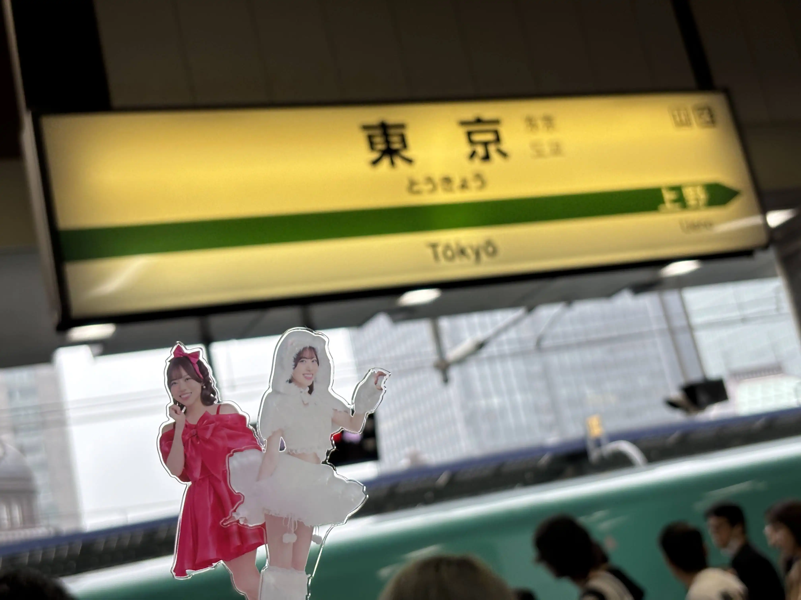
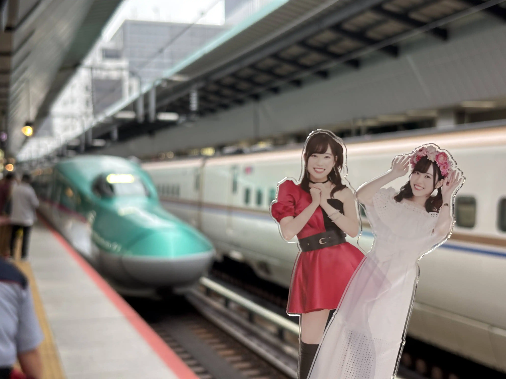
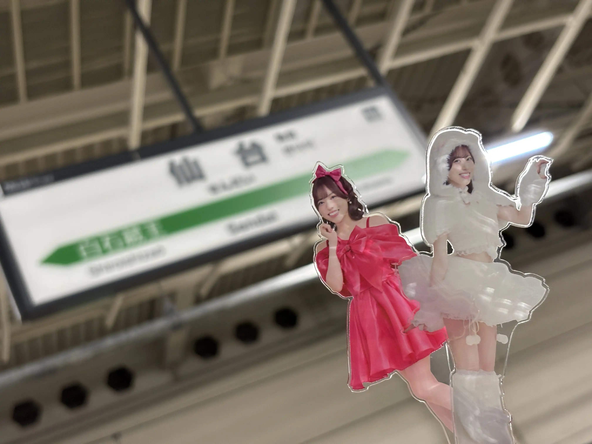
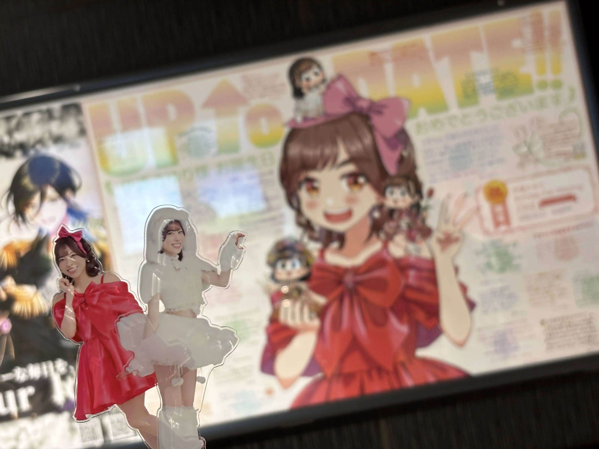
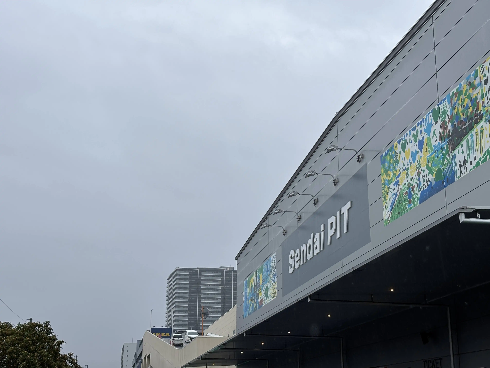
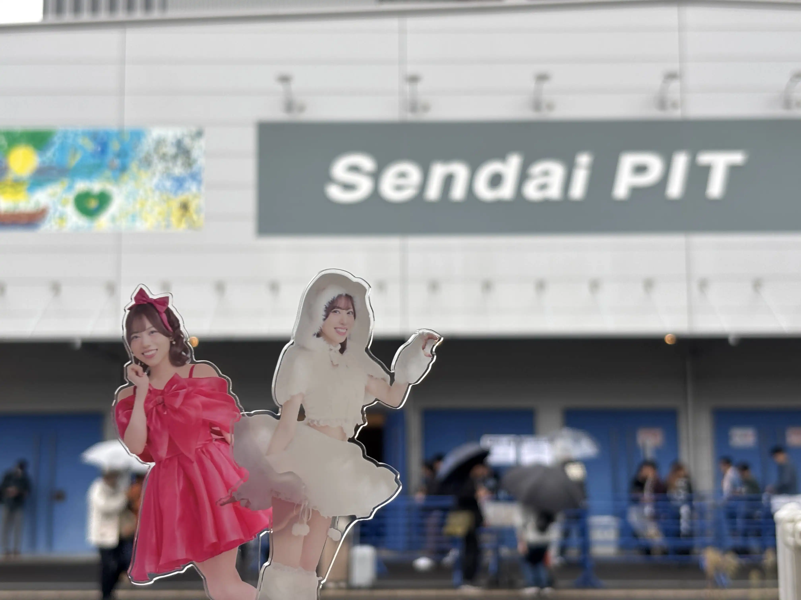
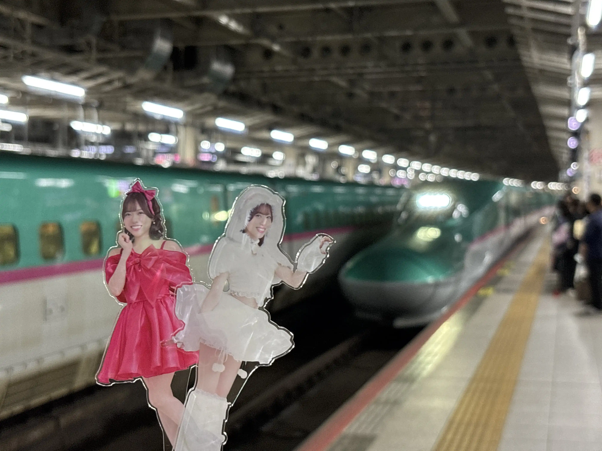
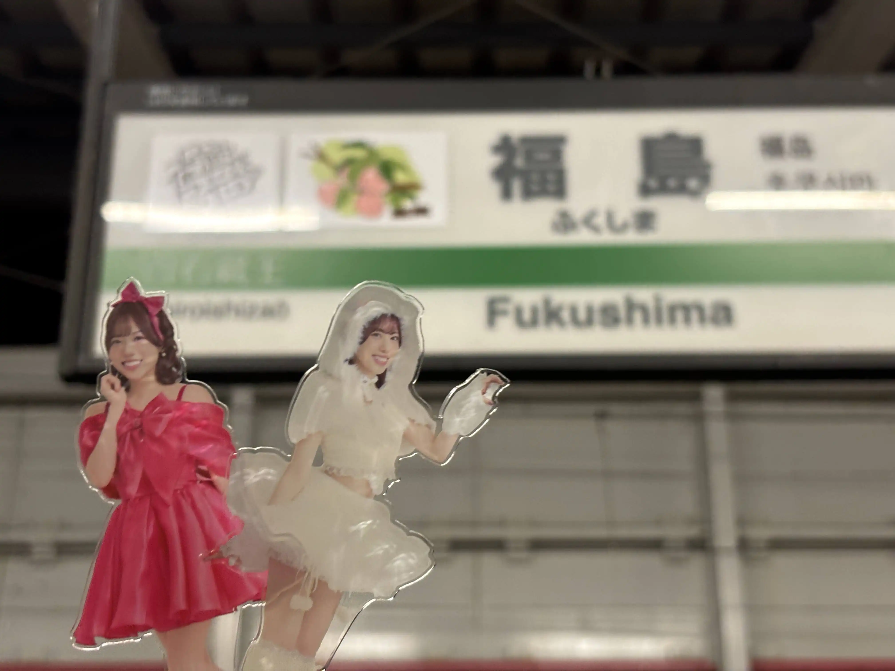

伊達さゆりさんのファンミーティング、仙台公演に参加しました。
トークショーやらお渡し会やらあるので3日間連続でイベント参加になります。東京駅よりスタート。因みに雨です。
今回僕はJR東日本の早割、トクだ値30という激安で新幹線に乗れるチケットを取れず通常料金ではやぶさに乗車。
は「やぶ」さ。「さゆやぶ」ですね。間違い無い。
東京駅から約1時間30分で仙台駅に。普段はやまびこなのでとても速く感じました。
仙台駅には推しのお誕生日をお祝いする広告がありました。
会場着。開演まで時間が有り尚且つ雨が降っていて寒かったので近くにあるイケアで時間を潰しました。
昼公演。席は後ろの方ながらも通路から3列隣ぐらいでした。
基本的には東京公演と同じ構成、何かクイズをしてお話をして最後に1曲披露してくれるという流れ。
何故か僕らが劇団員になり推しとセリフを言い合うというコーナもありました。
因みに例の如く借り物競走があり、僕の周りの席の方が運良く提示されたものを持っていてくれたおかげで2回も僕の近くまで推しが来てくれました…。感謝…。
そんな感じで昼公演は終了。終演後は夜公演まで時間があったので近くのマックでヲタクとお話をしていました。
そして夜公演
なんと僕は最後列の通路列。カナシイ…！（家を出る前から分かっていましたが…！2次先行なので仕方無いですが…！
入場後に今までの企画で無かった事として、推しに頑張りたい事、頑張る事を紙に書いてボックスに投函する形式で送るという物がありました。
僕は「推しをいっぱい応援するよ！」（原文ママ）を本名で提出してみました。
夜公演も基本的な構成は昼公演と同じでした。
しかしながら決定的に今までと違う事がありました。
そう、それは、先程書いた紙の内容を推しの伊達さゆりさんと来てくれた皆さんに応援してもらうという企画があったんですね。
そしてそして、なんと、僕が当たってしまったんですね…笑
列と番号で呼ばれる形式だったのですが、僕の列は後方という事もあり僕の列に座っている方は他の列に比べて圧倒的に少ない。
ぶっちゃけた話、列番号を呼ばれた段階で「来たな…！勝ったな…！」と思いました。もう立つ準備をしていました。というかもう立っていたかもしれません…！
そんな感じ立って、推しに名前（本名）と先程書いた内容を読み上げて貰い、「けっぱれ」（仙台の方言、頑張れという意味）を会場の人、そして推しの伊達さゆりさんより直接いただきました…！
僕はなんて言ったら良いかを考え、「いっぱい応援するぞー！」みたいな事を述べた覚えがあります。興奮して半分ぐらい忘れてしまっているのですが…笑
因みに本名で書いていたので最初に名前を読み上げて貰う際に推しが若干「これは…読み上げて…いいの？」的なリアクションをしていたのは覚えています…笑
という事で夜公演では僕の本名を推しに読み上げてもらうという事がありました。そして僕の本名がオープンソースになってしまった…笑
因みに身内の他のヲタクも何故か当たっており、会場を出たあとに興奮していました…笑
その後は翌日のために福島駅まで向かう必要があったのですぐに仙台駅へ。何故か電車が踏切の異常だかで止まり予約していた新幹線に間に合わなくなりそうになってしまいました…笑
仙台駅。さゆり…やまびこだよ…。
そして福島駅。新幹線は早いですね。20分ぐらいしかかかりませんでした。
宿の温泉とサウナで汗を流し、近くのセブンイレブンでハイボールとラーメンを調達。部屋でゆっくり味わってから就寝しました。